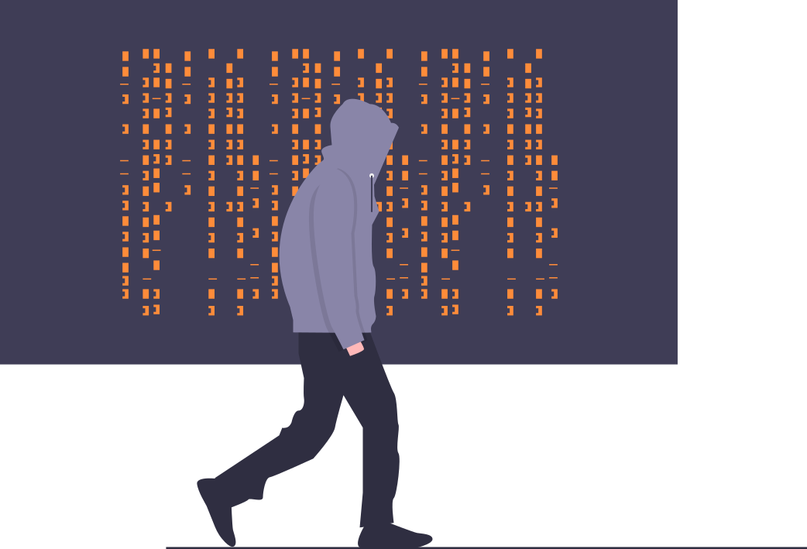

A companion piece to our FSB Sound Practices series. Source: Finextra, July 7, 2026.
Last week the European Central Bank (ECB) sent a letter to the CEOs of the banks it supervises with an unusually specific ask: submit an action plan for addressing AI-enabled cyber threats by the end of October.
Not a discussion paper. Not a request for comment. A plan, with a deadline, addressed to the CEO.
If you run a community bank in the US, your first instinct is probably that this is Europe's problem. The ECB doesn't examine you. Frankfurt is a long way from your board room. Fair enough. But I'd argue this letter is worth ten minutes of your attention, and here's why:
Europe is only 1 second away in cyberspace
What the ECB Actually Asked For
The letter lays out short-term priorities that should sound familiar to anyone who's read a US interagency guidance document:
Accelerated patch management at scale. Attackers using AI find and exploit known vulnerabilities faster than manual patch cycles can close them.
Enhanced threat monitoring and detection. If the attacks get faster and more automated, detection has to as well.
Third-party risk verification. Not just having a vendor risk program, but verifying it actually covers the exposure.
The ECB was blunt about where to focus first: protecting perimeter technologies and internet-facing ICT assets, "including third-party software and open-source components," is key to preparing for the rise in AI-enabled cyber threats.
Longer term, the letter points at legacy infrastructure modernization, operational resilience (response, recovery, crisis management), and information sharing. A separate letter on quantum computing risk is coming later.
Why a European Letter Matters

Here's the pattern we've written about throughout our Sound Practices series: international standard-setters move first, US regulators absorb, and a few exam cycles later the same questions show up in your examiner's request list. The FSB's Sound Practices for AI are following that path right now. There's no reason to think AI-enabled cyber risk will be different.
And there's a second signal worth noting. The European Systemic Risk Board, in the same news cycle, called frontier AI models "a paradigm shift for cybersecurity" and warned that in the short to medium term they hand the advantage to attackers, who can discover vulnerabilities and execute attacks with increased speed, scale, and sophistication.
That warning is not jurisdiction-specific. An AI-assisted phishing campaign or vulnerability scan doesn't check whether your charter is national or state, or whether you hold $500 million or $500 billion in assets. If anything, community institutions are attractive targets precisely because attackers assume the defenses are thinner.
So the question isn't whether US regulators will eventually ask community banks about AI-enabled cyber threats. It's whether you'd rather work through the answer on your own timeline or under exam pressure.
How a Community Bank Might Begin This Assessment

The good news: you don't need a new program, a new committee, or a consultant engagement to get started. The ECB's letter is really asking banks to point existing disciplines at a new threat profile. A community bank can do a credible first pass with the resources it already has.
Here's a practical sequence:
- Map what's exposed. List every internet-facing asset: online banking, mobile app, website, remote access, email gateway, any vendor portal that touches your network. Include the third-party software and open-source components behind them, because that's exactly where the ECB told its banks to look first. If your IT team can't produce this list in an afternoon, that gap is finding number one.
- Time your patch cycle. Pull the last six months of critical vulnerability disclosures that affected your stack and measure how long each took to patch. The specific number matters less than knowing it. AI-assisted attackers compress the window between disclosure and exploitation, so a 45-day patch cycle that was defensible in 2024 may not be defensible now.
- Ask your core provider and top vendors the AI question, both directions. What AI have they embedded in the products you run (this connects directly to the AI inventory we covered in Sound Practice 3)? And what are they doing about AI-enabled threats against their own infrastructure? Your exposure is mostly their exposure. Get answers in writing.
- Review detection against faster attacks. Whoever handles your security monitoring, whether in-house, MSSP, or core-provider bundled, ask them one question: what changes when attack volume and speed double? If the answer is "nothing, we'd just be slower," you've learned something important.
- Stress-test the response plan against an AI-speed scenario. Take your existing incident response plan and walk through a tabletop where the attack unfolds in hours instead of days. Most plans assume human-paced adversaries. Note where yours breaks.
- Write it down where an examiner would look. Findings, gaps, and a remediation timeline, documented in your risk framework alongside everything else. Even a one-page summary dated this quarter puts you ahead of the institutions that wait for the guidance to arrive first.
None of this is exotic. It's patch management, vendor management, monitoring, and incident response, which are disciplines your bank already practices. The ECB letter just changes the assumptions those disciplines were built on.
The Takeaway
European supervisors looked at AI-enabled cyber risk and decided it warranted a CEO-level deadline. The ESRB looked at frontier AI models and called the near-term advantage for attackers a paradigm shift. US community banks don't need to wait for the Fed, FDIC, OCC, or NCUA to translate that into formal guidance before doing the unglamorous work above.
Start with the exposure map and the patch cycle timing. Everything else follows from knowing what you have and how fast you can defend it.
This post is part of our ongoing series on AI risk management for community financial institutions. If you're following along with the FSB Sound Practices series, this pairs naturally with Sound Practice 3 on AI risk inventories: you can't assess AI-enabled cyber exposure in systems nobody has listed.